Events Archive
 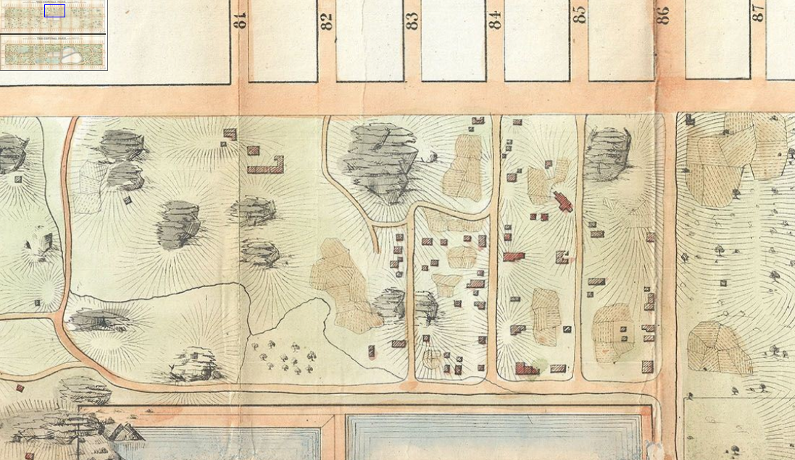
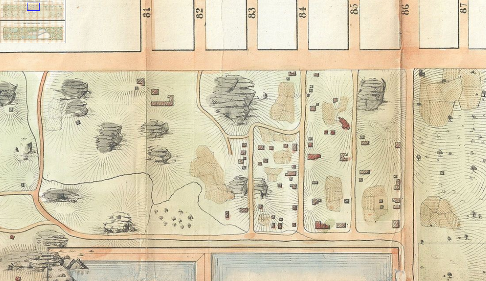
 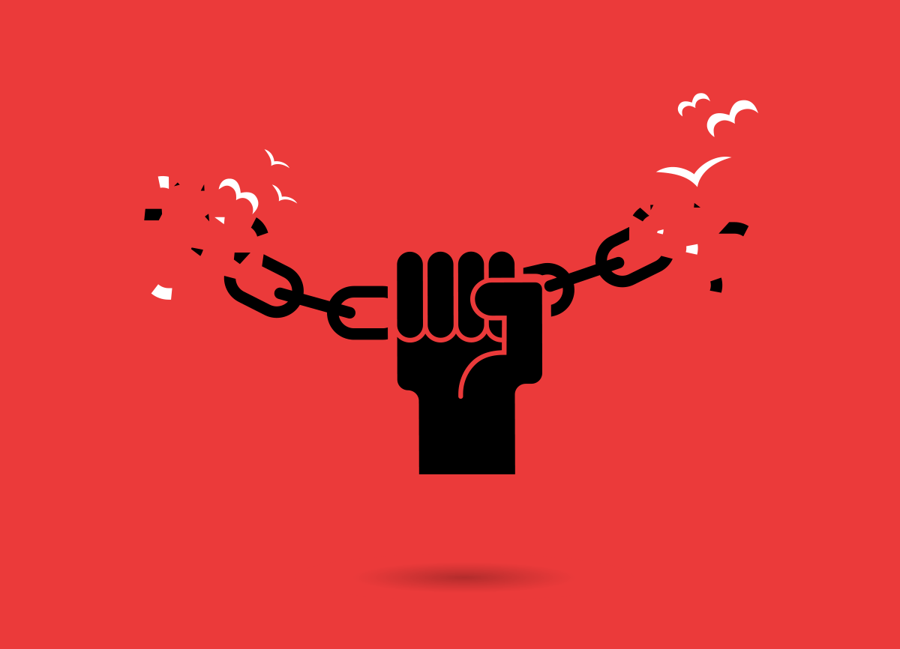
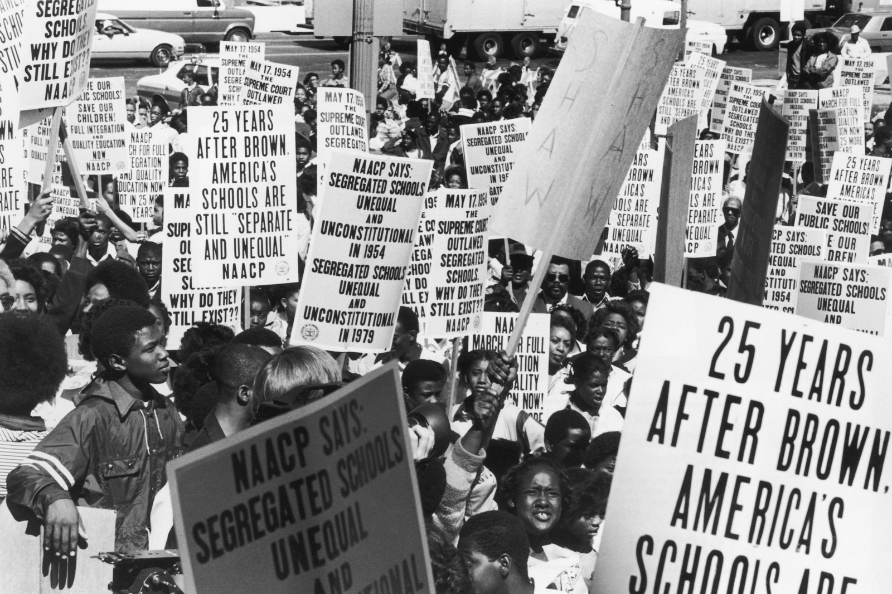
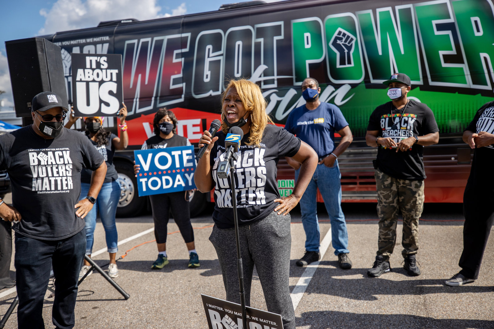
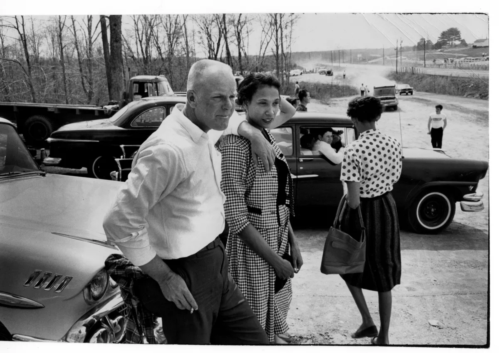
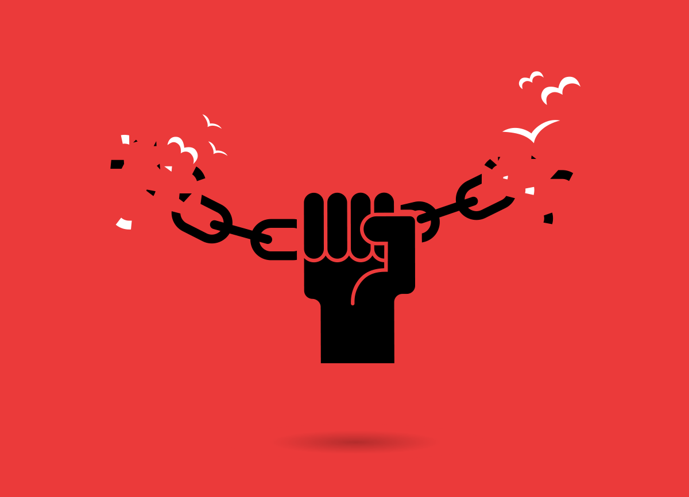
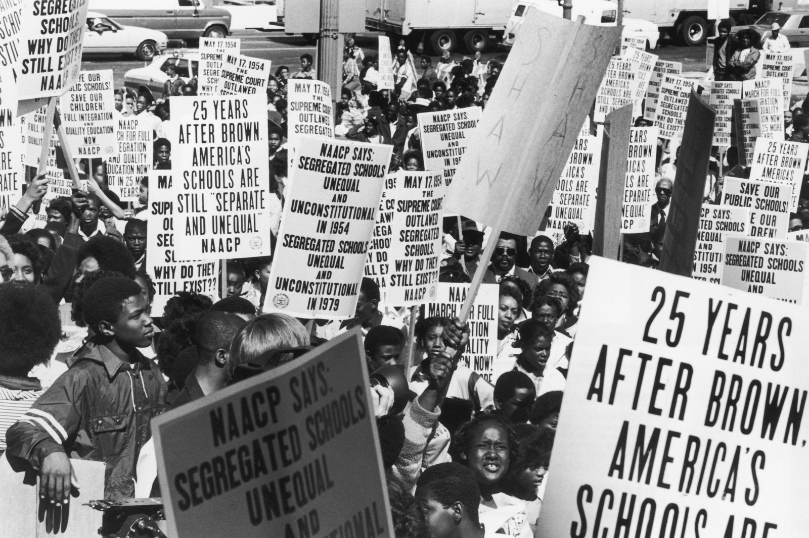
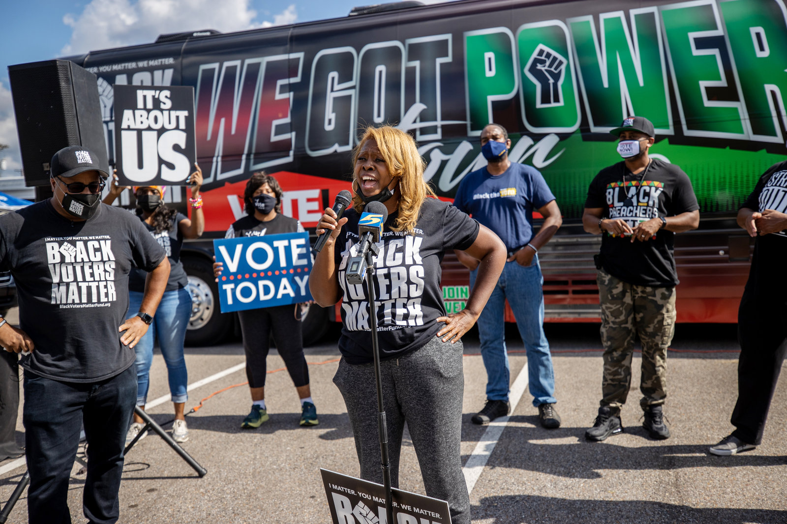
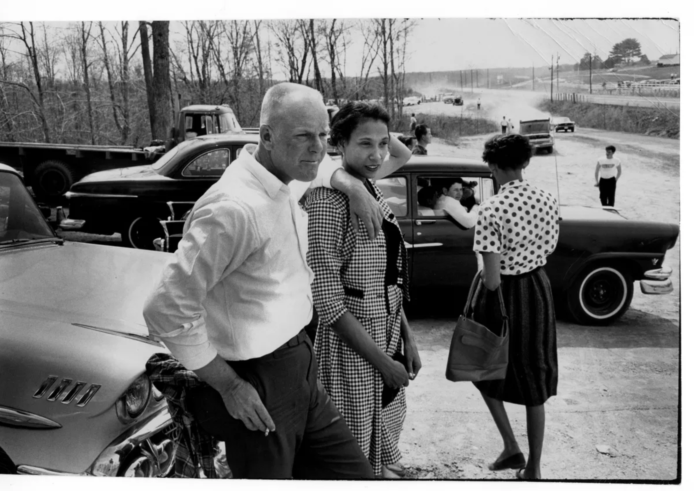
 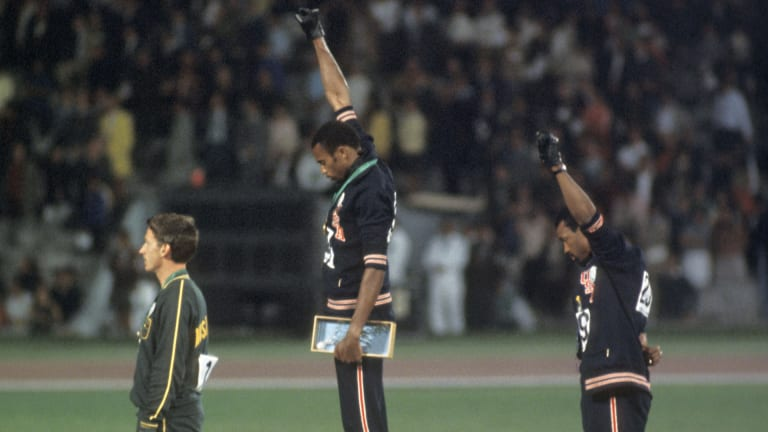
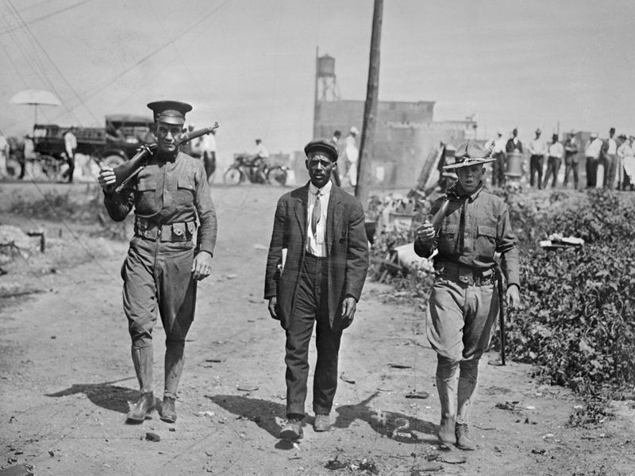
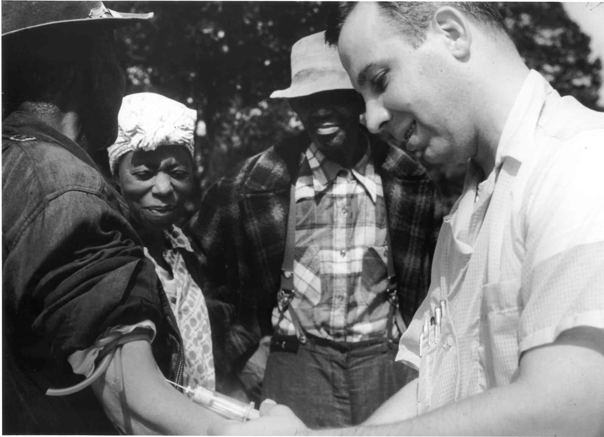
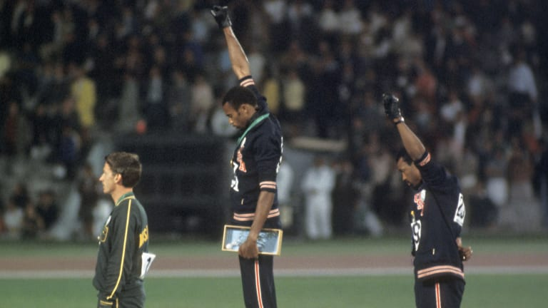
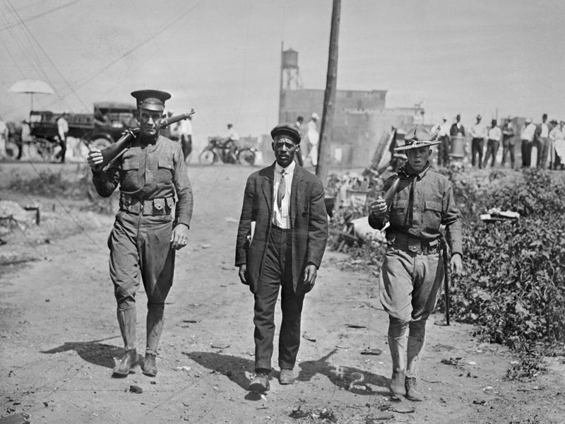
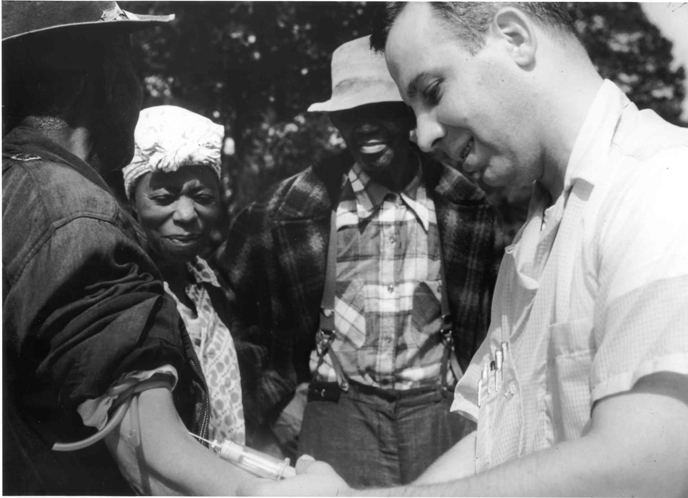

Listed from left to right on mobile display.
1. Chicago's Red Summer
On Sunday, July 27, 1919, thousands of Chicagoans sought relief from the brutal heat on the shores of Lake Michigan. Among them was Eugene Williams, a seventeen-year-old African American. When he and his friends inadvertently drifted across an invisible line that divided the waters by race, a group of whites, insulted by such an act, began throwing stones at them, one of which struck Williams, causing him to drown. In the racial powder keg that was Chicago, his murder was the spark that ignited it during what became the Red Summer of 1919. After the drowning of Eugene Williams, the police refused to arrest the white man who was considered responsible for his death. As the crowd grew, the tension escalated, and the fighting began. The police force, owing both to understaffing and the open sympathy of many officers with the white rioters, was ineffective. Only the long-delayed intervention of the Illinois National Guard brought the violence to a halt. After seven days of shootings, arson, and beatings, the Race Riot resulted in the deaths of 15 whites and 23 blacks with an additional 537 injured (195 white, 342 black). Since then, a century of African American activism has challenged the racism and social hypocrisy that allowed those responsible for Eugene Williams’s death to elude justice. Activists continue the fight against racial discrimination in Chicago and the United States (via Chicago History).
2. WNBA Activism for BLM
For WNBA players, activism has been a part of their DNA for a long time. They have been especially outspoken lately, dedicating the season -- which started in July -- to Breonna Taylor and the Say Her Name campaign. New this season, they introduced a Social Justice Council of players and activists to push conversations around social issues forward. And this week, one team wore shirts with seven bullet holes in the back, a testament to the fate that befell Jacob Blake in Wisconsin. From LGBTQ rights to racial justice, WNBA players have been vocal for years, since their inaugural season in 1997. Though Colin Kaepernick became the face of police brutality demonstrations in 2016, WNBA players actually began protesting before he did. Members of the Minnesota Lynx, then reigning WNBA champions, held a news conference before their game on July 9, 2016, to raise awareness of police violence after the killing of Philando Castile. They also wore shirts with the names of Alton Sterling and Castile on the back. At the news conference, Rebekkah Brunson, then a captain for the Lynx, spoke about the police shootings. "What is happening now is not new. Racism and unjust phobic fear of Black males and disregard of Black females is very real. When we look at the facts, it is hard to deny there is a real problem in our society," said Brunson, now a coach for the Lynx. "If we take this time to see that this is a human issue, and speak out together, we can greatly decrease fear and create change. Their actions were powerful, so much so that four off-duty cops working the game that night walked off.
As the season wore on, players across the league continued to protest. Entire teams knelt during the anthem. Players wore black warmup shirts to show their solidarity. They went on, undeterred, even when the league threatened to fine them. Elizabeth Williams, a player for the Atlanta Dream, was drafted into the league in 2015. She told CNN that it is easy to forget how unimaginable it was back then for athletes to say things like "Black Lives Matter" or to kneel, especially on national television. "For us to do that in 2016 -- to kneel, to walk out before the anthem before a Finals game -- that level of activism was kind of unheard of in sports in 2016," Williams said. She continued, "We [have] been doing this work, regardless of how much visibility we [have] had." (via CNN, Fighting for Social Justice is in WNBAs DNA)
3. The Story of Mine Mill
In 1907, middle of the banking crisis, U.S. Steel, this huge steel conglomerate from Pittsburgh, they buy TCI. TCI later becomes a subsidiary of U.S. Steel. Flash-forward to the 19-teens, World War I is ramping up, America needs steel, and they need that Birmingham iron ore to make it. Those Birmingham iron ore miners are living in workers villages, and 80 percent of the iron ore miners were black. These workers saw labor movements happening all around them, including this union out west that had a lot of social justice ideas. It was called the International Union of Mine, Mill and Smelter Workers - Mine Mill. In 1918, the Birmingham workers get Mine Mill to come on down, help them organize. Among the organizers,a black man, Ulysses Hale; a white man, Edward Crough. The steel employers - not happy. A company-aligned vigilante group kidnapped both of the men, beat them up. They let Crough go, but they tarred and feathered Hale and told him to get out of town. Next time, they said, it will be a necktie affair. The vigilante group formed by the steel employers didn't just go away. The TCI and U.S. Steel created this vigilante group that then becomes the Jefferson County KKK. With the KKK around in the '20s, Birmingham unions are quiet. Organizing is under attack all over the country. But after the stock market crash in the 1930s, there's labor unrest, Roosevelt, the New Deal.
It's a new day for unions, and in 1933, a group of Birmingham iron ore miners say, we're going to give Mine Mill a try again. Pushing forward a kind of democratic vision, not just for workers but for all of Southern society and the nation, and that's what made them dangerous. These black and white miners met in stealth mode, up in the woods, up on Red Mountain, and they set forth this egalitarian agenda. That union designated in their charter that the officials of the union would be split between black workers and white workers. In Jim Crow Alabama, and in most of America at this time, this was not done. The steel employers were looking at this egalitarian union, and they were losing it. TCI fired more than 150 strikers. Things did not look good for the Mine Millers. But then the union got help from above - from the federal government. In '35, the Roosevelt administration passed the Wagner Act, created the National Labor Relations Board. So the Mine Millers, all have these issues with TCI. They petition this board in '38, they get their decision, and the board decided to force TCI to hire back the miners and give Mine Mill a collective bargaining agreement. And so this radical interracial union, in the middle of Jim Crow, became the official union (via NPR, The Story of Mine Mill).
4. Seneca Village
Before Central Park was created, the landscape along what is now the Park’s perimeter from West 82nd to West 89th Street was the site of Seneca Village, a community of predominantly African-Americans, many of whom owned property. By 1855, the village consisted of approximately 225 residents, made up of roughly two-thirds African-Americans, one-third Irish immigrants, and a small number of individuals of German descent. One of few African-American enclaves at the time, Seneca Village allowed residents to live away from the more built-up sections of downtown Manhattan and escape the unhealthy conditions and racism they faced there. Seneca Village began in 1825, when landowners in the area, John and Elizabeth Whitehead, subdivided their land and sold it as 200 lots. Andrew Williams, a 25-year-old African-American shoeshiner, bought the first three lots for $125. Epiphany Davis, a store clerk, bought 12 lots for $578, and the AME Zion Church purchased another six lots. From there a community was born. From 1825 to 1832, the Whiteheads sold about half of their land parcels to other African-Americans. By the early 1830s, there were approximately 10 homes in the Village. Compared to other African-Americans living in New York, residents of Seneca Village seem to have been more stable and prosperous—by 1855, approximately half of them owned their own homes. With property ownership came other rights not commonly held by African-Americans in the City—namely, the right to vote.
In 1821, New York State required African-American men to own at least $250 in property and hold residency for at least three years to be able to vote. Of the 100 black New Yorkers eligible to vote in 1845, 10 lived in Seneca Village. During the early 1850s, the City began planning for a large municipal park to counter unhealthful urban conditions and provide space for recreation. In 1853, the New York State Legislature enacted a law that set aside 775 acres of land in Manhattan—from 59th to 106th Streets, between Fifth and Eighth Avenues—to create the country’s first major landscaped public park. The City acquired the land through eminent domain, the law that allows the government to take private land for public use with compensation paid to the landowner. This was a common practice in the 19th century, and had been used to build Manhattan’s grid of streets decades earlier. There were roughly 1,600 inhabitants displaced throughout the area. Although landowners were compensated, many argued that their land was undervalued. Ultimately, all residents had to leave by the end of 1857 (via Central Park NYC, The Story of Seneca Village).
5. Rap on Trial
According to the local authorities [ATF], here is how the story goes: A young man [Olutosin] attempts to purchase multiple guns over the Internet. He's described as agitated and anxious by a gun dealer involved in the transaction. The ATF launches an investigation. The young man's car is found, apparently abandoned, on a campus side road. Inside it is a piece of paper with a threat on it, alluding to ransom and a possible massacre on a university campus. When the young man is arrested, a loaded gun is discovered in his dorm room. State's Attorney Tom Gibbons says police felt they had prevented a serious crime. On July 24, 2007, Olutosin Oduwole was formerly charged with storing a weapon in campus housing, and a far more serious crime, attempting to make a terrorist threat. In Oltosin's [Tosin] eyes, he's got a budding career as a rapper, an active social life and a commitment to community service. He's buying guns, but only, he says, to sell them and make a little extra cash for music equipment. This is not the picture of a would-be terrorist. But that brings us to that piece of paper that police found in Tosin's car.
It would be hard to explain away a note like this demanding ransom, threatening a campus massacre. But Tosin says the problem lies in one word, note. What the police found, he insists, was not a note. It was scribbled ideas for a rap song. This is how Tosin says it all unfolded. It began as an idea one night in the artist den. Tosin had just finished watching the TV show 'Law & Order.' The episode was about some bloggers who livestreamed their home on social media..Tosin was fascinated by the episode. He loved the way it played with viewers. All the way through, it kept people guessing. Were they watching an actual kidnapping take place online? Were they watching performance art? Tosin thought the premise might make a cool spoken introduction to a rap song. Sometimes rap songs start this way, with introductions that set a scene with lyrics that don't rhyme. That, says Tosin's friend Thomas, is what they were playing with. Tosin says no one in law enforcement wanted to hear his side of the story. There were lots of issues - race, culture, the fear of a mass shooting. And there was the music. In every dimension, rap lyrics are evaluated more negatively compared to when the lyrics were perceived to be country. Charis, professor in Criminology, was called as an expert for the defense in Tosin's case, in part because of some interesting research she's done. She was noticing a large number of prosecutions that were introducing rap lyrics in court. She had a basic question. Were violent lyrics perceived as more threatening, more dangerous, more literal, more in need of regulation when they are described as rap compared to other music genres? Because prosecutors are using rap lyrics as evidence in these criminal trials, this raises a whole host of questions about whether prosecutors, judges, jurors may be relying on perception and stereotype about rappers and rap music in their interpretation and evaluation of the lyrics (via NPR, Rap on Trial).
6. The 1970 Racketeer Influenced and Corrupt Organizations Act
In 1970, Congress enacted the Racketeer Influenced and Corrupt Organizations Act (RICO) to dismantle the Mafia and other bodies of organized crime with great economic influence. The U.S. government expanded the scope of RICO to include gangs in the 1980s. Since many states do not have laws specifically designed to dismantle gangs, RICO provides a federal avenue to target gangs within any jurisdiction of the United States. From a prosecutor's perspective, RICO's focus on the criminal activity of group enterprises, as opposed to the criminal activity of individuals, provides major advantages over other criminal laws to combat gangs. RICO's reliance upon enterprise theory enables prosecutors to introduce all aspects of a gang's history and criminal conduct into evidence.7 The scope of admissible evidence is thus not limited to the conduct of specific defendants. Punishment for participating in a RICO enterprise is also more severe than the penalties for the underlying predicate crimes.8 Sentences for the most serious RICO convictions are especially harsh and can result in mandatory life terms.9 For these reasons, some prosecutors praise RICO as the preferred weapon for dismantling '0 gangs.
Recently, legal scholars have focused on RICO's application to criminal street gangs specifically, questioning whether this application is justified. As a matter of statutory interpetation, some scholars posit that Congress intended for RICO to apply exclusively to highly organized enterprises that infiltrate legitimate businesses, and that criminal street gangs do not fit this description. Now we must focus on the troublesome consequences that RICO's application to gangs may have in terms of race. The breadth of the federal statutory definitions of RICO 'enterprise' and 'criminal street gang' subject a variety of criminal groups with members of any race to prosecution under RICO as criminal street gangs. But in the study, a strong majority (approximately 86%) of the prosecuted gangs was affiliated with one or more racial minority groups (Black, Latino, or Asian). A similarly large percent (approximately 83%) of the prosecuted individuals were tied to gangs affiliated with one or more racial minority groups. Some scholars and practitioners would argue that these findings substantiate the idea that gangs are comprised mostly of racial and ethnic minorities. this labeling may be driven by systemic racial biases that marginalize entire racial minority groups and privilege nonimmigrant White communities.
These systemic biases are characterized by converging constructions of race and crime that fuse perceptions of gang-related crime with images of racial minorities. Conflating gang activity with racial minorities enables the government to rely upon denigrating racial stereotypes in order to engage in racial profiling and conduct sweeping arrests of racial minorities under RICO. Moreover, nonimmigrant White criminal offenders are shielded from being conceptualized as gang members or affiliates for RICO purposes, and mainstream White communities are protected from the stigma of having gang problems (via UMich Law, Systemic Racial Bias and RICO's Application to Criminal Street and Prison Gangs).
7. Black Wall Street
In 1921, Tulsa, Oklahoma’s Greenwood District, known as Black Wall Street, was one of the most prosperous African-American communities in the United States. But on May 31 of that year, the Tulsa Tribune reported that a black man, Dick Rowland, attempted to rape a white woman, Sarah Page. Whites in the area refused to wait for the investigative process to play out, sparking two days of unprecedented racial violence. Thirty-five city blocks went up in flames, 300 people died, and 800 were injured. Defense of white female virtue was the expressed motivation for the collective racial violence. Accounts vary on what happened between Page and Rowland in the elevator of the Drexel Building. Yet as a result of the Tulsa Tribune’s racially inflammatory report, black and white armed mobs arrived at the courthouse. Scuffles broke out, and shots were fired. Since the blacks were outnumbered, they headed back to Greenwood. But the enraged whites were not far behind, looting and burning businesses and homes along the way. Nine thousand people became homeless, Josie Pickens writes in Ebony. This “modern, majestic, sophisticated, and unapologetically black” community boasted of “banks, hotels, cafés, clothiers, movie theaters, and contemporary homes.” Not to mention luxuries, such as “indoor plumbing and a remarkable school system that superiorly educated black children.” Undoubtedly, less fortunate white neighbors resented their upper-class lifestyle. As a result of a jealous desire “to put progressive, high-achieving African-Americans in their place,” a wave of domestic white terrorism caused black dispossession (via JSTOR Daily, Black Wall Street.
8. Juneteenth
The holiday recognizes the date when news of emancipation finally reached Galveston, Texas, on June 19, 1865, when Maj. Gen. Gordon Granger along with more than 1,800 federal troops arrived to take control of the state, nearly two months after the end of the Civil War, confirming the freedom of the last remaining slaves in the deepest parts of the South. Although the Emancipation Proclamation, an executive order declaring that “all persons held as slaves” would be free, was signed by President Abraham Lincoln in 1863 and Gen. Robert E. Lee’s surrender in Appomattox, Va., marked the end of the Civil War in April of 1865, news spread slowly and often met resistance from plantation owners. While the 13th Amendment was ratified in December 1865, enshrining a ban on slavery into the Constitution, the enslavement of African-Americans continued for several years. Texas became the first state, in 1980, to declare Juneteenth as a holiday. Forty-seven of the 50 states as well as the District of Columbia acknowledge or observe Juneteenth as a holiday. In 2019, New Hampshire became the most recent state to recognize Juneteenth as a state holiday. Hawaii, North Dakota and South Dakota haven’t formally approved Juneteenth as a state holiday. An increasing number of businesses have started to observe Juneteenth as a holiday. Twitter Inc., Square Inc. and Nike are among companies that said Juneteenth would be a paid day off for employees, while others have canceled corporate meetings that day or encouraged employees to engage in education or community work. Juneteenth serves as a reminder of how far we have come, and how far we need to go until we are all truly free (via WSJ, What is Juneteenth).
9. The Reverse Freedom Rides
The summer of 1961 was a pivotal moment in the civil rights movement. And that is when black and white activists known as the Freedom Riders set out to integrate bus travel and challenged Jim Crow laws. But what happened a year later has largely been forgotten. That is when Southern segregationists fought back. Their victims were poor African Americans. Late on a Wednesday afternoon in May 1962, a Greyhound bus arrived in Hyannis, Mass. The doors opened at the bus stop closest to the summer White House, where President John Kennedy vacationed. The were lured to embark on the journey by a supposed message from the president promising jobs and permanent housing. The president did not come to meet them, but Margaret Moseley did. Moseley was part of the local NAACP. What she knew and the arrivals did nott was that there would be no presidential welcome, no jobs, no permanent housing. The Reverse Freedom Rides were a test - a test the North was meant to fail. In TV interviews, segregationists like George Singelmann, who came up with the original idea, claimed that the North had indeed flunked. Singleman said, "[The North] have been crying the sing song on behalf of the Negroes throughout the nation. And of course now when it comes time for them to put up or shut up, they have shut up." The cruelty and cynicism of the scheme helped turn public opinion against it, and the whole thing ended just months after it began. But still, riders were 1,500 miles away from everything they had ever known.
10. Black Voters Matter in Georgia
In the 2020 election, more than 1 million African Americans cast ballots in Georgia. Since November, organizations such as the New Georgia Project and Black Voters Matter have worked to bring out even more voters for the Georgin U.S. Senate runoff elections in January. In one of those races, Democrat Raphael Warnock, a pastor from Atlanta, defeated Republican Sen. Kelly Loeffler. He becomes the first Black Democrat elected to the Senate from a Southern state. In the other race, Democrat Jon Ossoff won a tight runoff against Republican David Perdue. The two wins give Democrats control of the U.S. Senate for the first time since 2015. One of the people behind the historic turnout that helped propel Democrats to victory in Georgia is LaTosha Brown, who together with Cliff Albright, founded Black Voters Matter in 2016. Against that backdrop, Brown said she was elated "to see Black voters come out in record numbers in spite of all of those things and, to add a cherry on top, in spite of voter suppression" — to be on "the vanguard of democracy" and to "open up a new way of thinking about the political landscape" in Georgia and the country as a whole. She continues, "I think it [is] quite simple. I mean, I think the name of my organization says it all. It [is] three words: Black Voters Matter. And I think that after we saw a state like Georgia, that had been solid Republican, flip in November, I think it opened up an avenue for people to see what was possible, that it was no longer a question or a debate whether Black voters, in fact, matter. People felt a sense of momentum, that part of that win opened up this space around what would be possible. ... We wanted people, we wanted Black voters in particular, to feel a sense of their power and their agency, and in spite of all odds, what we could do in pushing this country forward.
11. Atlanta Washerwoman Strike
Atlanta in the early 1880s was just beginning to develop. Less than two decades had passed since the Civil War ended. The city had primitive water and sewer systems, and unsanitary trash lined the unpaved streets. Atlanta’s businessmen and politicians sought to paint a very different picture to lure northern businesses to the city, spotlighting it as the urban center of the New South with a large, subservient workforce. More than half of the city’s black residents—and half of the black wage earners—were women. Black women largely were responsible for sustaining not only their families but their communities as well. One-third of black women living in Atlanta, as in other cities, raised families alone. In the 1880s, more black women worked as laundresses than in any other type of domestic work. The city had more laundresses than male common laborers. In contrast, only a small portion of white women worked for pay, and the average white family could afford the services of at least a washerwoman. Laundry work was the most difficult of domestic jobs, and industrialization made the chore even more dreadful. Laundresses worked long, tiring hours and their wages ranged from $4 to $8 a month. These wages changed little over time and laundresses would increase their earnings by adding on clients or getting help from their children.
In July 1881, 20 laundresses met to form a trade organization, the Washing Society. They sought higher pay, respect and autonomy over their work and established a uniform rate at $1 per dozen pounds of wash. With the help of black ministers throughout the city, they held a mass meeting and called a strike to achieve higher pay at the uniform rate. In three weeks, the Washing Society grew from 20 to 3,000 strikers. By August, municipal authorities were taking direct action, arresting strikers, fining members and making house visits. The laundresses were not deterred. But the white establishment was so agitated that city politicians got involved. The City Council proposed that members of any washerwoman’s organization pay an annual fee of $25 and then offered nonprofit tax status to businesses that wanted to start commercial laundries. Even though the $25 fee would mean several months of wages, the strikers were not discouraged. These politically savvy women workers were willing to pay the fee in exchange for self-regulation. To them, self-regulation of their industry was about respect. In the end, the strike not only raised wages—it, more importantly, established laundresses—and all black women workers—as instrumental to the New South’s economy. The white establishment was forced to acknowledge that black women workers, who were former slaves, were not invisible (via America's Unions, Atlanta's Washerwoman Strike).
12. Milliken v. Bradley
Roughly 9 million children — nearly 1 in 5 public school students in the U.S. — attend schools that are racially isolated and receive far less money than schools just a few miles away. 'Inequality is endemic' in America's public schools, nearly 1,000 school district borders where schools on one side receive at least 10% less money per student than schools on the other side and where the racial makeup of the two sides' students varies by 25 percentage points or more. It is the story of segregation, in 2019. Milliken v. Bradley was the case that posed an essential question in 1974: Who should be responsible for desegregating America's schools? The case arrived two decades after Brown began the push for school desegregation. In those intervening years, the federal government achieved meaningful progress in the South, and the movement ultimately worked its way north, to cities like Detroit. But many white voters grew anxious, even angry, about these efforts. That anger helped propel Richard Nixon to the White House in 1969. In just a few years, he filled not one but four vacancies on the Supreme Court. And it was this new court that would hear oral arguments in Milliken. Leaders from the state of Michigan and the city of Detroit had been sued for policies that had helped segregate Detroit's schools. At the time, two-thirds of students there were African American, while growing suburbs were almost exclusively white. The plaintiffs argued that school policies reinforced racist housing practices that had trapped black families inside the city. It was a story playing out across the United States.
While black parents had been contained by racist housing policies, their children were being contained by school district lines. The state was pouring money into new suburban schools but was building them behind district lines that acted like fences. A lower court judge ruled that the only way to meaningfully desegregate Detroit was to tear down those lines — those fences — and to bus students between the city and 53 suburban school districts. The suburbs fought that ruling in the Supreme Court. The suburbs argued that their school district lines had been drawn without malice and that the federal courts had no right to interfere in the local control of schools unless the black parents who brought the case could show that the suburbs were responsible for school segregation in Detroit. A divided court agreed, finding in a 5-4 ruling that if these suburbs weren't actively hurting Detroit's students, then they couldn't be forced to help them either. Of the five justices in that majority, four had been appointed by Nixon. Ultimately, Detroit was told to somehow desegregate itself. 'The Detroit-only plan simply has no hope of achieving actual desegregation,' said Justice Thurgood Marshall in his dissent. 'Under such a plan, white and Negro students will not go to school together. Instead, Negro children will continue to attend all-Negro schools. The very evil that Brown was aimed at will not be cured but will be perpetuated.' Marshall knew that because schools are funded through local property taxes, these segregated big-city schools weren't just separate but were also clearly unequal. As an attorney in the early 1950s, Marshall had argued — and won — the historic Brown v. Board case, and he called the Milliken ruling a 'giant step backwards.' (via NPR, Milliken v. Bradley)
13. The 1968 Strike at San Francisco State
One of the things that made San Francisco State unique as opposed to Berkeley or some other places is that it was a commuter school. The students were older, and it was a working-class school. Among the type of students who went to San Francisco State, not only did many have work experience, but they also had political experience that they brought with them to the campus. The Black Panthers were a tremendous influence on what happened at San Francisco State, with many of the members of the Black Student Union (BSU) being early members of the party. So there’s an intimate relationship between the BSU and the Black Panther Party. The BSU students had been organizing for years, developing alternative educational experiences, within the Experimental College at first, and later the tutorial programs that connected them to the community. The BSU students ran this program and were tutoring hundreds of kids in the Mission and Fillmore, teaching them the basics, but also teaching them Black Power. Out of these diverse experiences, a unique and revolutionary Black Studies curriculum began to cohere. However, the administration was threatening to pull funding for these working programs. There was also an English instructor, George Murray, one of the Central Committee members of the Black Student Union, who was a longtime student at State and a graduate student by the late 1960s, but he was also Minister of Education for the Black Panther Party.
In the spring of ’68, there was also a sit-in organized by student orgs where the goals were twofold: kicking the ROTC off campus and a set of demands around recruitment and retention of Third World students — not only Black students but also students from the Mission and from Chinatown. That sit-in didn’t get the ROTC off campus, but it did get special admissions for students of color. The SFSU campus president, liberal John Summerskill, made the promise, but as soon as he made it, he resigned. So the BSU wasn’t getting their Black Studies program as promised, and funding for the programs they were involved in with the community was being threatened by Sacramento and by the Board of Trustees. One of their prominent members, George Murray, was threatened with being fired. When the catalyst happened — with George Murray being fired from teaching — the BSU went out on strike. The BSU issued 10 demands, and other orgs added demands, going out on strike along with the BSU. THE BSU had a press conference about one week into the strike, and the cops came onto campus and just started beating people — members of BSU in particular. BSU leader Nesbit Crutchfield got hit over the head for everyone to see.The strike ended on March 20, 1969. The administration, in response to student demands, established a College of Ethnic Studies. The administration also agreed to accept virtually all students of color for the fall semester of 1969. And the student strikers did have lasting effects: Eventually, the SF State's creation of a College of Ethnic Studies gave rise to similar departments around the country (via The Socialist Worker and NPR, Strike at San Francisco State).
14. Loving v. Virginia
Loving v. Virginia was a Supreme Court case that struck down state laws banning interracial marriage in the United States. The plaintiffs in the case were Richard and Mildred Loving, a white man and Black woman whose marriage was deemed illegal according to Virginia state law. With the help of the American Civil Liberties Union (ACLU), the Lovings appealed to the U.S. Supreme Court, which ruled unanimously that so-called “anti-miscegenation” statutes were unconstitutional under the 14th Amendment. The decision is often cited as a watershed moment in the dismantling of “Jim Crow” race laws. The Loving case was a challenge to centuries of American laws banning miscegenation, i.e., any marriage or interbreeding among different races. Restrictions on miscegenation existed as early as the colonial era, and of the 50 U.S. states, all but nine had a law against the practice at some point in their history. Early attempts to dispute race-based marriage bans in court met with little success. One of the first and most noteworthy cases was 1883’s Pace v. Alabama, in which the U.S. Supreme Court ruled that an Alabama anti-miscegenation law was constitutional because it punished Black people and white people equally.
In 1888, meanwhile, the high court ruled that states had the authority to regulate marriage. By the 1950s, more than half the states in the Union—including every state in the South—still had laws restricting marriage by racial classifications. In Virginia, interracial marriage was illegal under 1924’s Act to Preserve Racial Integrity. Those who violated the law risked anywhere from one to five years in a state penitentiary. The Supreme Court announced its ruling in Loving v. Virginia on June 12, 1967. In a unanimous decision, the justices found that Virginia’s interracial marriage law violated the 14th Amendment to the Constitution. 'Under our Constitution, the freedom to marry, or not marry, a person of another race resides with the individual, and cannot be infringed by the state,' Chief Justice Earl Warren wrote. The landmark ruling not only overturned the Lovings’ 1958 criminal conviction, it also struck down laws against interracial marriage in 16 U.S. states including Virginia.
15. Corona Virus in the Black Community
The U.S. has been roiled this year by two crises that seem on the surface to be unrelated: the coronavirus pandemic and law-enforcement killings of black Americans— Although the immediate causes of these two tragedies seem distinct, both have their roots in structural racism. The virus has killed a disproportionate number of black people (as well as other people of color), and black people are by some estimates 2.5 times more likely than white people to be killed by the police. Support is building for police reform, and we can take concrete steps immediately to protect the health of black Americans. Deep health inequities have always existed in the U.S., but the pandemic has shone an especially harsh light on them. A report from the Centers for Disease Control and Prevention on a sample of 580 people hospitalized with confirmed cases of COVID-19 found that 33 percent of patients were black in a population sample where just 18 percent of the people were black. White people made up 59 percent of the same population, but only 45 percent were infected. Through April 16 in New York City, the death rate among blacks was 92 per 100,000 people and among Latinx people 74 per 100,000—whereas the numbers for white people and Asian people were 45 and 35 per 100,000, respectively.
These trends are not limited to New York: the coronavirus has infected and killed an outsize number of black people across the U.S. Many people of color work in so-called essential industries such as nursing or home health care, grocery stores and mass transit, where they are more likely to come into close contact with people who are sick. To make matters worse, these jobs are often poorly paid, and a large proportion of such workers lack health or life insurance. In addition, many black, Latinx and indigenous communities have high rates of underlying health conditions, including diabetes, hypertension and heart disease, which are known risk factors for severe illness and death from COVID-19. These disparities can be traced back largely to the racism and redlining that have resulted in poor, overcrowded housing and exposed people of color to more severe levels of air pollution—factors that exacerbate all these health problems. The Families First Coronavirus Response Act and the Coronavirus Aid, Relief, and Economic Security (CARES) Act, both of which Congress passed in March, did very little to protect the health of essential workers, according to policy experts across the political spectrum, because they focused more on providing economic relief than medical care or benefits (via Scientific American, Too Many Black Americans Are Dying from COVID-19).
16. The Myth of the Welfare Queen
It was the fall of 1974 when the Chicago Tribune ran a story with this lead - Linda Taylor received Illinois welfare checks and food stamps, even though she was driving three 1974 autos - a Cadillac, a Lincoln and a Chevrolet station wagon - claimed to own four South Side buildings and was about to leave for a vacation in Hawaii. That story went on to say that she had at least 27 different aliases. She had dozens of addresses. She had three Social Security cards. They, like, really wanted you to understand that she was [outrageous]. So they mentioned that she had recently gotten married to a sailor who was 20 years her junior. She became a staple for politicians who wanted to cut welfare spending, including a certain California governor and presidential hopeful named Ronald Reagan. When another newspaper picked up Linda Taylor's story, it ran the headline 'Welfare Queen Arrested.' And with that headline, there was a new stereotype. From there, the so-called welfare queen would become one of the most enduring and pernicious stereotypes in American politics. A lot of the details about this original welfare queen were exaggerated, or they were just wrong - like the amount of money that she supposedly took from the state of Illinois. And although Linda Taylor embodied this anti-black stereotype, her actual racial identity, was a little bit more ambiguous. Linda Taylor changed races as quickly and often as she changed names and addresses, just depending on whatever the scam required.
In the 1960s, more black people had moved out of the South and into big cities in the North and in the West, where the welfare rules were less discriminatory. And so black folks were able to use welfare. But those people were treated with suspicion and even hostility by local officials and the public. At the same time, many of the poor black women in big cities on welfare started organizing into local groups, calling for better treatment from their caseworkers, increased benefits. Some were even calling for a universal basic income - that's where the government guarantees that all its citizens get a certain amount of annual money. By the 1970s, with the economy slowing down and the public getting tired of stories of urban unrest, people were primed to believe even outlandish stories about poor city folks getting rich off taxpayer money. So y'all know where this is going. So that story that ran in the Chicago Tribune in 1974 about a spendthrift moocher caking off on furs and on cars in one of the nation's most well-known black neighborhoods.In the '70s, there was this feeling that welfare had become a problem. It had become a crisis. States don't want to be spending as much money. People are mad because their paychecks aren't buying as much as they used to. Who's causing this problem? It's black women on welfare. Who exemplifies that problem? Linda Taylor.
She was listed as white on the census in 1940 in Arkansas. She later in 1948 in California, when she got married there, identified herself as Hawaiian. And then in Chicago in the 1960s, she claimed that she was black. During these timese she was involved in a myriad of serious crime from scam to murder. So you have these two ideas happening in these stories, there's this woman who was using this racial ambiguity to scam people and also that she's a Cadillac-driving welfare queen from the South Side of Chicago, which is clearly meant to racialize her as black. Taylor becomes a sort of very racialized figure. And then people sort of latch onto her. They used her as an example of all the things wrong with welfare, and minimized her activity in a large variety of crime to solidify this new stereotype. And then by the time you get to Clinton 20 years later, it's still racialized but in this much more abstract way. It's harder to see, the way the rhetoric is about race and about the sort of suspicions about black mothers. But that's still informing what happens in our discourse around welfare (via NPR, The Original Welfare Queen).
17. There is No #MeToo Movement without Black Women
If you dig into many of the cultural and social advancements today, you’ll find a rich history of Black torchbearers replaced by white faces. Marijuana? Black leaders advocated for the legalization of marijuana as a civil rights issue long before it was popular. Body positivity? While often attributed to Ashley Graham, it’s a movement that in fact originated with Black plus-sized femmes. The #MeToo movement and unveiling of widespread sexual assault? Despite what you may have heard, the credit doesn’t belong to actress Alyssa Milano. African-American sexual assault survivor and activist Tarana Burke first introduced the phrase in 2006 to raise awareness specifically for marginalized victims. But this fight for sexual justice has been going on since the American Civil War. 'The history of the rape crisis movement in the United States is also a history of the struggle of African-American women against racism and sexism,' says Gillian Greensite, the director of Rape Prevention Education at University of California, Santa Cruz, on the History of the Rape Crisis Movement. To replace Black faces with white ones would be dishonest and insulting to the efforts Black women have made to create a better world for survivors and victims of abuse. But it also removes Black women from the conversation and causes serious detrimental effects to their health.
Many of the resources, crisis centers, and safe spaces available to women, victims, and survivors today are because of Black women. Specifically, Black women who were early rape activists during slavery. Black women’s testimonies and campaigns against sexual violence and sexual exploitation of black slaves led to some of the nation’s most prominent movements for social justice, like the American abolitionist movement to end slavery. They also helped establish today’s safe spaces and crisis centers, including the leading organization for domestic violence, the National Coalition Against Domestic Violence. One of the earliest collective efforts to expose rape in the United States was after the Memphis Riot of May 1866. Black women boldly testified before Congress, detailing the horrifying experience of being gang-raped by a white mob. During this time, only the rape of a white woman was considered illegal. Black women were left unprotected, often subjected to death threats (via Healthline, #MeToo Won’t Succeed If We Don’t Listen to Black Women). [Black women] have a long tradition of sharing [their] stories and fighting for sexual justice. Who is willing to listen? Who is paying attention? Black women have to figure out how to sustain these moments of visibility. For allies, this means listening and sharing Black stories, not rewriting them.
18. Griggs v. Duke Power
In 1971, the Supreme Court issued a unanimous ruling in Griggs v. Duke Power, which transformed our nation’s work places. As a result of the NAACP's Legal Defense Fund [LDF’s] advocacy, the Supreme Court embraced a powerful legal tool – now known as the “disparate impact” framework – that has proved essential in the fight to eradicate arbitrary and artificial barriers to equal employment opportunity for all individuals, regardless of their race. In Griggs, LDF represented a group of thirteen African-American employees who worked at the Duke Power Company’s Dan River Steam Station, a power-generating facility located in Draper, North Carolina. Duke Power had a long history of segregating employees by race. At the Steam Station, the best jobs were reserved for whites. African-Americans were relegated to the labor department, where the highest-paid worker earned less than the lowest-paid employee in the other four departments where only whites worked. Shortly after Congress passed Title VII of the Civil Rights Act of 1964, which made it illegal for employers to discriminate on the basis of race, Duke Power stopped expressly restricting African-Americans to the labor department and announced new standards for hiring, promotion, and transfers. In order to work in positions outside of the labor department, Duke Power now required a high school diploma or scores on standardized IQ tests equal to those of the average high school graduate.
These new requirements were not an improvement, however. They effectively perpetuated the discriminatory policies that Duke Power had utilized prior to the enactment of Title VII. Although the testing and diploma criteria disqualified African-Americans at a substantially higher rate than whites, Duke Power never established that they successfully measured ability to do the jobs in question. Indeed, the white employees hired before the requirements were imposed performed entirely satisfactorily. In December 1970, Jack Greenberg, presented argument in the Supreme Court on behalf of the African-American employees. In a groundbreaking decision, the Supreme Court ruled against Duke Power. It held that Title VII “proscribes not only overt discrimination but also practices that are fair in form, but discriminatory in operation.” The Court emphasized that Title VII in no way prohibits testing or diploma requirements for hiring or promotions. Indeed, when they are properly developed and used, tests and other employment criteria can be effective, efficient means for employers to evaluate applicants. But as the Court explained in Griggs, “What Congress has commanded is that any tests used must measure the person for the job and not the person in the abstract.” The Court therefore held that when an employment practice operates to exclude African-Americans or other racial minorities, that practice is prohibited unless the employer can show that it fulfills a genuine business need and is a valid measure of an applicant’s ability to learn or perform the job in question. Duke Power’s practices failed to meet these standards (via NAACP LDF, Griggs v. Duke Power).
19. Safe Water Drinking Act of 1974
Most Americans do not give a second thought to what happens after they turn on a faucet handle or flush a toilet. This is because the result is always the same: Clean, potable water comes out, available to drink, wash hands, cook food, clean clothes, or tidily dispose of waste, whatever the case may be. Yet in many places throughout the country, running water is a scarce resource, or even an unattainable luxury. The water crisis in Flint, Michigan, is perhaps the most infamous recent example of racial inequities in water access, where local officials' failure to adequately treat tap water exposed the city's nearly 100,000 residents, more than half of whom are black, to dangerous levels of lead and other contaminants. The problem is also acute in more remote or rural areas, including certain majority-black communities in the Deep South, majority-Latinx communities in California's Central Valley, and Native American reservations in the Southwest, among others. Nationwide, 17 percent of people in rural areas have had trouble obtaining potable water, and 12 percent have experienced problems with their sewage systems, according to the report. In some places, conditions are getting worse, not better. These racial and socioeconomic disparities are not an accident.
In an effort to cut down on the dangers posed by waterborne diseases, Congress passed the Safe Water Drinking Act in 1974, a landmark statute that empowers the Environmental Protection Agency to set and enforce national standards for drinking-water-contaminant levels. Cities and towns building out their systems would not always do so in majority-minority areas nearby. As the report documents, in the 1950s, the town of Zanesville, Ohio, did not build water lines in its African-American neighborhoods, and the following decade Roanoke, Virginia, did not extend its infrastructure to Hollins, a neighboring majority-black town. As a result, no one bothered to install a water system in the first place. Even today, there are places in the country where homes lack running water, within walking distance of neighborhoods that enjoy the full spectrum of water and sanitation services. The Safe Water Drinking Act also doesn't apply to systems that include fewer than 15 connections, or that serve fewer than 25 people. This means anyone who isn't linked into a large grid is more or less on their own, and the facilities they have to build, install, and maintain are subject to little regulatory oversight.
Meanwhile, federal investment has plummeted over the past several decades, from a 63 percent share of total capital spending on water and wastewater in 1977 to less than 9 percent today. Free grant money turned into expensive loans, forcing state and local governments to take on debt in order to make meaningful improvements. In lower-income, rural areas where subsidized construction hasn't already occurred, modest local budgets can't compensate for the shortfall, and the customer base isn't large or wealthy enough to independently finance the costs of improvements. Oftentimes, this doesn't just mean that tap water is unsafe; it means there is no tap water at all. Communities without access now have to struggle to catch up to the rest of the country with both hands tied behind their backs (via GQ, The Hidden Racial Inequities of Access to Water in America).
20. 1965 Bloody Sunday
On March 7, 1965, when then-25-year-old activist John Lewis led over 600 marchers across the Edmund Pettus Bridge in Selma, Alabama and faced brutal attacks by oncoming state troopers, footage of the violence collectively shocked the nation and galvanized the fight against racial injustice. The passage of the landmark Civil Rights Act of 1964 months earlier had done little in some parts of the state to ensure African Americans of the basic right to vote. Perhaps no place was Jim Crow’s grip tighter than in Dallas County, Alabama, where African Americans made up more than half of the population, yet accounted for just 2 percent of registered voters. For months, the efforts of the Student Nonviolent Coordinating Committee (SNCC) to register Black voters in the county seat of Selma had been thwarted. In January 1965, Martin Luther King, Jr., came to the city and gave the backing of the Southern Christian Leadership Council (SCLC) to the cause. Peaceful demonstrations in Selma and surrounding communities resulted in the arrests of thousands. The rising racial tensions finally bubbled over into bloodshed in the nearby town of Marion on February 18, 1965, when state troopers clubbed protestors and fatally shot 26-year-old Jimmie Lee Jackson, an African American demonstrator trying to protect his mother, who was being struck by police.
In response, civil rights leaders planned to take their cause directly to Alabama Governor George Wallace on a 54-mile march from Selma to the state capital of Montgomery. Although Wallace ordered state troopers “to use whatever measures are necessary to prevent a march,” approximately 600 voting rights advocates set out from the Brown Chapel AME Church on Sunday, March 7. The demonstrators marched undisturbed through downtown Selma, where the ghosts of the past constantly permeated the present. As they began to cross the steel-arched bridge spanning the Alabama River, the marchers who gazed up could see the name of a Confederate general and reputed grand dragon of the Alabama Ku Klux Klan, Edmund Pettus, staring right back at them in big block letters emblazoned across the bridge’s crossbeam. Once Lewis and Williams reached the crest of the bridge, they saw trouble on the other side. A wall of state troopers, wearing white helmets and slapping billy clubs in their hands, stretched across Route 80 at the base of the span. Behind them were deputies of county sheriff Jim Clark, some on horseback, and dozens of white spectators waving Confederate flags and giddily anticipating a showdown. Troopers knocked the marchers to the ground. They struck them with sticks. Clouds of tear gas mixed with the screams of terrified marchers and the cheers of reveling bystanders. Deputies on horseback charged ahead and chased the gasping men, women and children back over the bridge as they swung clubs, whips and rubber tubing wrapped in barbed wire. Although forced back, the protestors did not fight back. The events in Selma galvanized public opinion and mobilized Congress to pass the Voting Rights Act, which President Johnson signed into law on August 6, 1965. Today, the bridge that served as the backdrop to “Bloody Sunday” still bears the name of a white supremacist, but now it is a symbolic civil rights landmark.
21. 1968 Summer Olympics
It’s an iconic image: Two athletes raise their fists on the Olympic podium. The photograph, taken after the 200 meter race at the 1968 Summer Olympics in Mexico City, turned African-American athletes Tommie Smith and John Carlos from track-and-field stars into the center of a roiling controversy over their raised-fist salute, a symbol of Black power and the human rights movement at large. Smith and Carlos, who had won gold and bronze, respectively, agreed to use their medal wins as an opportunity to highlight the social issues roiling the United States at the time. Racial tensions were at a height, and the Civil Rights movement had given way to the Black Power movement. African-Americans like Smith and Carlos were frustrated by what they saw as the passive nature of the Civil Rights movement. They sought out active forms of protests and advocated for racial pride, Black nationalism and dramatic action rather than incremental change. It was only months after the assassination of Rev. Dr. Martin Luther King, Jr., and protests against the Vietnam War were gaining steam as well. In the lead-up to the Olympics, Smith and Carlos helped organize the Olympic Project for Human Rights, a group that reflected their Black pride and social consciousness. The group saw the Olympic Games as an opportunity to agitate for better treatment of Black athletes and Black people around the world. Its demands included hiring more Black coaches and rescinding Olympic invitations to Rhodesia and South Africa, both of which practiced apartheid.
Though the project initially proposed a boycott of the Olympics altogether, Smith and Carlos decided to compete in the hopes they could use their achievements as a platform for broader change. Then, just 10 days before the opening of the Summer Games, an unarmed group of protesters assembled in Mexico City’s Three Cultures Square to plan the next move of the growing Mexican students’ movement. The Mexican government sent in bulldozers to disperse the thousands gathered, and troops fired into the crowd, massacring between four (the government’s official count) and 3,000 students. Carlos and Smith were deeply affected by these events and the plight of marginalized people around the world. “It was a cry for freedom and for human rights,” Smith told Smithsonian magazine in 2008. “We had to be seen because we couldn’t be heard.” (via History, The Black Power Protest)
22. Voting Rights Act of 1965
Lyndon B. Johnson assumed the presidency in November 1963 upon the assassination of President John F. Kennedy. In the presidential race of 1964, Johnson was officially elected in a landslide victory and used this mandate to push for legislation he believed would improve the American way of life, such as stronger voting-rights laws. After the Civil War, the 15th Amendment, ratified in 1870, prohibited states from denying a male citizen the right to vote based on “race, color or previous condition of servitude.” Nevertheless, in the ensuing decades, various discriminatory practices were used to prevent African Americans, particularly those in the South, from exercising their right to vote. During the civil rights movement of the 1950s and 1960s, voting rights activists in the South were subjected to various forms of mistreatment and violence. One event that outraged many Americans occurred on March 7, 1965, when peaceful participants in a Selma to Montgomery march for voting rights were met by Alabama state troopers who attacked them with nightsticks, tear gas and whips after they refused to turn back. Black people attempting to vote often were told by election officials that they had gotten the date, time or polling place wrong, that they possessed insufficient literacy skills or that they had filled out an application incorrectly. Black people, whose population suffered a high rate of illiteracy due to centuries of oppression and poverty, often would be forced to take literacy tests, which they sometimes failed. Johnson also told Congress that voting officials, primarily in Southern states, had been known to force Black voters to “recite the entire Constitution or explain the most complex provisions of state laws,” a task most white voters would have been hard-pressed to accomplish. In some cases, even Black people with college degrees were turned away from the polls.
The voting rights bill was passed in the U.S. Senate by a 77-19 vote on May 26, 1965. After debating the bill for more than a month, the U.S. House of Representatives passed the bill by a vote of 333-85 on July 9. Johnson signed the Voting Rights Act into law on August 6, 1965, with Martin Luther King, Jr. and other civil rights leaders present at the ceremony. The act banned the use of literacy tests, provided for federal oversight of voter registration in areas where less than 50 percent of the non-white population had not registered to vote, and authorized the U.S. attorney general to investigate the use of poll taxes in state and local elections. In 1964, the 24th Amendment made poll taxes illegal in federal elections; poll taxes in state elections were banned in 1966 by the U.S. Supreme Court (via History).
23. The East. St. Louis Race Riot
An incident that survivors call the East St. Louis Race War. From July 1 through July 3, 1917, a small Illinois city located across the river from its Missouri counterpart was overrun with violence. A smoldering labor dispute turned deadly as rampaging whites began brutally beating and killing African-Americans. By the end of the three-day crisis, the official death toll was 39 black individuals and nine whites, but many believe that more than 100 African-Americans were killed. “We spent a lifetime as children hearing these stories. It was clear to me my father was suffering from some form of what they call PTSD,” the son of a survivor [Kennedy] recalls. “He witnessed horrible things: people’s houses being set ablaze, . . . people being shot when they tried to flee, some trying to swim to the other side of the Mississippi while being shot at by white mobs with rifles, others being dragged out of street cars and beaten and hanged from street lamps.” Racial tensions began simmering in East St. Louis—a city where thousands of blacks had moved from the South to work in war factories—as early as February 1917. The African-American population was 6,000 in 1910 and nearly double that by 1917.
In the spring, the largely white workforce at the Aluminum Ore Company went on strike. Hundreds of blacks were hired. After a City Council meeting on May 28, angry white workers lodged formal complaints against black migrants. When word of an attempted robbery of a white man by an armed black man spread through the city, mobs started beating any African-Americans they found, even pulling individuals off of streetcars and trolleys. The National Guard was called in but dispersed in June. On July 1, a white man in a Ford shot into black homes. Armed African-Americans gathered in the area and shot into another oncoming Ford, killing two men who turned out to be police officers investigating the shooting. The next morning, whites pouring out of a meeting in the Labor Temple downtown began beating blacks with guns, rocks and pipes. They set fire to homes and shot residents as they fled their burning properties. Blacks were also lynched in other areas of the city. The East St. Louis affair was a man hunt, conducted on a sporting basis, though with anything but the fair play which is the principle of sport. There was a horribly cool deliberateness and a spirit of fun about it. ‘Get a n*****’ was the slogan (via Smithsonian Magazine, The East St. Louis Race Riot).
24. The Rodney King Riots
In April of 1992, four Los Angeles policemen — three of them white — were acquitted of the savage beating of Rodney King, an African-American man. Caught on camera by a bystander, graphic video of the attack was broadcast into homes across the nation and worldwide. Fury over the acquittal — stoked by years of racial and economic inequality in the city — spilled over into the streets, resulting in five days of rioting in Los Angeles. It ignited a national conversation about racial and economic disparity and police use of force that continues today. A year earlier, in March 1991, King — who was on parole for robbery — had led police on a high-speed chase through Los Angeles; later, he was charged with driving under the influence. When police finally stopped him, King was ordered out of the car. Los Angeles Police Department officers then kicked him repeatedly and beat him with batons for a reported 15 minutes. The video showed that more than a dozen cops stood by, watching and commenting on the beating. King's injuries resulted in skull fractures, broken bones and teeth, and permanent brain damage. Ultimately, four officers were charged with excessive use of force. A year later, on April 29, 1992, a jury consisting of 12 residents from the distant suburbs of Ventura County — nine white, one Latino, one biracial, one Asian — found the four officers not guilty. The reaction to the acquittal in South Central Los Angeles — now known just as South Los Angeles — was particularly violent. At the time, more than half of the population there was black.
Tension had already been mounting in the neighborhood in the years leading up to the riots: the unemployment rate was about 50 percent, a drug epidemic was ravaging the area, and gang activity and violent crime were high. Another contributing factor: The same month as Rodney King's beating, a Korean store owner in South Los Angeles shot and killed a 15-year-old African-American girl named Latasha Harlins, who was accused of trying to steal orange juice. It was later discovered Harlins was clutching money to pay for the juice when she was killed. The store owner received probation and a $500 fine. At the same time, the community's anger was also deepening against Los Angeles police. African-Americans said they did not feel protected during times of need, but instead reported being harassed without cause. During the five days of unrest, there were more than 50 riot-related deaths — including 10 people who were shot and killed by LAPD officers and National Guardsmen. More than 2,000 people were injured, and nearly 6,000 alleged looters and arsonists were arrested. Slowly, residents returned to their everyday routines. But the Rodney King beating and the Los Angeles riots exploded out of social issues that still have not been resolved. That shocking, grainy video of his beating would be just the first of a long line of police brutality videos to go viral. That and issues such as racial profiling are as evident now — in places such as Baltimore, Ferguson and other inner cities — as they were in 1992 Los Angeles, says Armour, the USC professor and author of a book about what he calls the 1992 'uprising.' “Ain't nothing changed but the year it is,” he says (via NPR, When LA Erupted In Anger).
25. Tuskegee Syphilis Study
In 1932, the Public Health Service, working with the Tuskegee Institute, began a study to record the natural history of syphilis in hopes of justifying treatment programs for [Black people]. It was called the “Tuskegee Study of Untreated Syphilis in the Negro Male.” The study initially involved 600 black men – 399 with syphilis, 201 who did not have the disease. The study was conducted without the benefit of patients’ informed consent. Researchers told the men they were being treated for “bad blood,” a local term used to describe several ailments, including syphilis, anemia, and fatigue. In truth, they did not receive the proper treatment needed to cure their illness. In July 1972, an Associated Press story about the Tuskegee Study caused a public outcry that led the Assistant Secretary for Health and Scientific Affairs to appoint an Ad Hoc Advisory Panel to review the study. The panel had nine members from the fields of medicine, law, religion, labor, education, health administration, and public affairs. The panel found that the men had agreed freely to be examined and treated. However, there was no evidence that researchers had informed them of the study or its real purpose. In fact, the men had been misled and had not been given all the facts required to provide informed consent. The men were never given adequate treatment for their disease. Even when penicillin became the drug of choice for syphilis in 1947, researchers did not offer it to the subjects.
The advisory panel found nothing to show that subjects were ever given the choice of quitting the study, even when this new, highly effective treatment became widely used. The advisory panel concluded that the Tuskegee Study was “ethically unjustified”–the knowledge gained was sparse when compared with the risks the study posed for its subjects. In October 1972, the panel advised stopping the study at once. A month later, the Assistant Secretary for Health and Scientific Affairs announced the end of the Tuskegee Study. In the summer of 1973, a class-action lawsuit was filed on behalf of the study participants and their families. In 1974, a $10 million out-of-court settlement was reached. As part of the settlement, the U.S. government promised to give lifetime medical benefits and burial services to all living participants. The Tuskegee Health Benefit Program (THBP) was established to provide these services. In 1975, wives, widows and offspring were added to the program. In 1995, the program was expanded to include health as well as medical benefits. The Centers for Disease Control and Prevention was given responsibility for the program, where it remains today in the National Center for HIV/AIDS, Viral Hepatitis, STD, and TB Prevention. The last study participant died in January 2004. The last widow receiving THBP benefits died in January 2009. There are 11 offspring currently receiving medical and health benefits (via CDC).
26. The Democratic National Convention of 1972
he Democratic National Convention was a tense scene in July of 1972. The gathering in Miami came just one month after burglars had broken into the Democratic headquarters at the Watergate. The candidate who won the presidential nomination would be the one to take on President Richard Nixon, whom most people didn’t yet suspect of orchestrating the break-in. And for the first time, one of the candidates for the Democratic challenger was a Black woman. Shirley Chisholm had long been known for breaking barriers. Four years before, she’d become the first Black U.S. Congresswoman in history as a Representative of her New York district. When she launched her primary campaign in January of ‘72, she became the first Black person to seek the presidential nomination from one of the two major parties (the first woman was Margaret Chase Smith, who sought the Republican nomination in 1964). Her slogan was: “Unbought and Unbossed.” From the beginning, white male journalists and politicians didn’t take her bid seriously. Norman Mailer called her campaign “quixotic” in the Wall Street Journal, writing that “few politicians, Black or white, believe it.” Chisholm’s strongest supporters were Black women, but she struggled to win support from Black men and white women. Many of them endorsed Senator George McGovern because they felt he was more likely to win against Nixon. (McGovern won the nomination and lost to Nixon in a landslide.) Chisholm was realistic about her chances, and winning wasn’t necessarily her goal.
Chisholm hoped that once she reached the convention, she could could use her coalition of delegates to negotiate with the winning candidate in favor of rights for women, Black Americans and Indigenous people. In July, Chisholm arrived at the Democratic convention with 152 delegates. This was more than those of senator Hubert Humphrey and Edward Muskie, who’d been two of the main challengers on the campaign trail (Humphrey was the Democratic candidate in 1968). Yet she was still in fourth place behind Senator George McGovern, Senator Henry Jackson, and the injured Wallace. McGovern was the clear winner with 1,729 delegates, and his lead gave him no incentive to negotiate with Chisholm for her 152. Even though she wasn’t able to use her delegates as leverage, Chisholm knew her candidacy was necessary in shifting the paradigm in which the only white men could be considered presidential material. Her presidential run was met with hostility from racists who vandalized her campaign materials with the n-word and men who told the Chicago Daily Defender she was playing “vaginal politics.” But her candidacy opened the door for other Black and female candidates to run for president. She said many times, “I just want to show it can be done,” (via History, Shirley Chisholm).
27. Burmingham Church Bombing
The Birmingham church bombing occurred on September 15, 1963, when a bomb exploded before Sunday morning services at the 16th Street Baptist Church in Birmingham, Alabama—a church with a predominantly Black congregation that also served as a meeting place for civil rights leaders. Four young girls were killed and many other people injured. Outrage over the incident and the violent clash between protesters and police that followed helped draw national attention to the hard-fought, often-dangerous struggle for civil rights for African Americans. Alabama Governor George Wallace was a leading foe of desegregation, and Birmingham had one of the strongest and most violent chapters of the Ku Klux Klan (KKK). The city’s police commissioner, Eugene “Bull” Connor, was notorious for his willingness to use brutality in combating radical demonstrators, union members and any Black citizens. By 1963, homemade bombs set off in Birmingham's Black homes and churches were such common occurrences that the city had earned the nickname “Bombingham.” Precisely because of its reputation as a stronghold for white supremacy, civil rights activists made Birmingham a major focus of their efforts to desegregate the Deep South.Many of the civil rights protest marches that took place in Birmingham during the 1960s began at the steps of the 16th Street Baptist Church, which had long been a significant religious center for the city’s Black population and a routine meeting place for civil rights organizers like King. KKK members had routinely called in bomb threats intended to disrupt civil rights meetings as well as services at the church.
At 10:22 a.m. on the morning of September 15, 1963, some 200 church members were in the building—many attending Sunday school classes before the start of the 11 am service—when the bomb detonated on the church’s east side, spraying mortar and bricks from the front of the church and caving in its interior walls. Most parishioners were able to evacuate the building as it filled with smoke, but the bodies of four young girls (14-year-old Addie Mae Collins, Cynthia Wesley and Carole Robertson and 11-year-old Denise McNair) were found beneath the rubble in a basement restroom. Though Birmingham’s white supremacists (and even certain individuals) were immediately suspected in the bombing, repeated calls for the perpetrators to be brought to justice went unanswered for more than a decade. It was later revealed that the FBI had information concerning the identity of the bombers by 1965 and did nothing. (J. Edgar Hoover, then-head of the FBI, disapproved of the civil rights movement; he died in 1972.) In 1977, Alabama Attorney General Bob Baxley reopened the investigation and Klan leader Robert E. Chambliss was brought to trial for the bombings and convicted of murder. Continuing to maintain his innocence, Chambliss died in prison in 1985. The case was again reopened in 1980, 1988 and 1997, when two other former Klan members, Thomas Blanton and Bobby Frank Cherry, were finally brought to trial; Blanton was convicted in 2001 and Cherry in 2002. A fourth suspect, Herman Frank Cash, died in 1994 before he could be brought to trial. Even though the legal system was slow to provide justice, the effect of the bombing of the 16th Street Baptist Church was immediate and significant. Outrage over the death of the four young girls helped build increased support behind the continuing struggle to end segregation—support that would help lead to the passage of both the Civil Rights Act of 1964 and the Voting Rights Act of 1965. In that important sense, the bombing’s impact was exactly the opposite of what its perpetrators had intended (via History).
28. The Modern Civil Rights Protest
Excerpts from the NYT Opinion Piece: Waiting for a Perfect Protest: Even mainstream media outlets that typically fact-check the president seem to have subtly bought into Mr. Trump’s “both sides” narrative regarding right- and left-wing extremism. They’ve run headlines that highlight small violent skirmishes while ignoring the thousands who marched and protested peacefully, to say nothing of the injustices that inspired the protests. Our complaint here is not about the right-wing media outlets that we know will continue to delegitimize anti-racist protest in any form — whether it’s peacefully sitting during the national anthem, marching in the streets, staging boycotts or simply making the apparently radical claim that “black lives matter.” Rather, our concern at this moment is with our moderate brothers and sisters who voice support for the cause of racial justice but simultaneously cling to paralyzingly unrealistic standards when it comes to what protest should look like. National polling from the 1960s shows that even during that celebrated “golden age” of nonviolent protest, most Americans were against marches and demonstrations. A 1961 Gallup poll revealed that 57 percent of the public thought that lunch counter sit-ins and other demonstrations would hurt integration efforts.
A 1963 poll showed that 60 percent had an unfavorable feeling toward the planned March on Washington, where Dr. King gave his “I Have a Dream” speech. A year later, 74 percent said that since black people had made some progress, they should stop their demonstrations; and by 1969, 74 percent said that marching, picketing and demonstrations were hurting the civil rights cause. As for Dr. King personally, the figure who current moderates most readily point to as a model, 50 percent of people polled in 1966 thought that he was hurting the civil rights movement; only 36 percent believed he was helping. The civil rights movement was messy, disorderly, confrontational and yes, sometimes violent. Those standing on the sidelines of the current racial-justice movement, waiting for a pristine or flawless exercise of righteous protest, will have a long wait. They, we suspect, will be this generation’s version of the millions who claim that they were one of the thousands who marched with Dr. King. Each of us should realize that what we do now is most likely what we would have done during those celebrated protests 50 years ago. Rather than critique from afar, come out of your homes, follow those who are closest to the pain, and help us to redeem this country, and yourselves, in the process (read the full opinion piece at NYT, Waiting for a Perfect Protest).